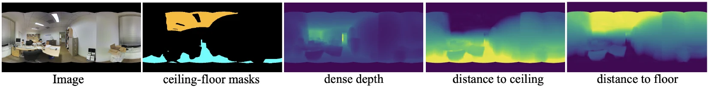

NeurIPS 2024 · Computer vision
Geometric Exploitation for Indoor Panoramic Semantic Segmentation
Indoor 360° panoramas are dominated by floors and ceilings. Segmenting those separately, with the help of depth, and describing every other pixel by its height between them sets a new state of the art on three benchmarks.
- Authors
- Duc Cao Dinh, Seok Joon Kim, Kyusung Cho
- Topics
- Panoramic semantic segmentation, depth estimation, indoor scene geometry
- Venue
- Advances in Neural Information Processing Systems 37 (NeurIPS), 2024
- DOI
- 10.52202/079017-0830
Motivation
Equirectangular panoramas over-sample floors and ceilings.
Panoramic semantic segmentation (PASS) labels every pixel of a 360° image. Most methods treat it as a 2D distortion problem and ignore the spatial structure of indoor scenes, which leaves monocular ambiguities unresolved.
Projecting a sphere onto a rectangle stretches the regions near the poles: in Stanford2D3DS, ceilings and floors cover on average 18% and 20% of each panorama. A single network trained on the whole image therefore favours these large, easy classes and struggles with small objects near the equator, such as chairs and tables. We reformulate the task as two groups with different optimisation strategies:
- Over-sampled segments: floor and ceiling, learned jointly with dense depth estimation.
- Under-sampled segments: all other classes, predicted by a decoder that exploits the room’s geometry.

Method
Two branches that share one encoder.

Encoder
The encoder follows Trans4PASS+, producing features at 1/4 to 1/32 resolution, with deformable patch embeddings to handle panoramic distortion.
Over-sampled segments and depth
A light decoder predicts dense depth and a three-class mask (floor, ceiling, unknown) from a shared hidden feature map. Because floors and ceilings are planar, a plane surface-normal loss enforces planarity of the predicted depth inside the ground-truth floor and ceiling masks, which makes the later plane fitting accurate.
Under-sampled segments: a hybrid decoder
A transformer-based context module (six encoder layers) attends jointly over five representations of the scene: global image features, the hidden features of the depth branch (cross-task distillation), a 3D point cloud back-projected from predicted depth, the vertical relative distance (next section), and the predicted floor and ceiling masks. Transformer outputs are coarse, so a parallel high-resolution branch adds fine image features to keep mask boundaries sharp. Finally, the two predictions are merged, with floor and ceiling taking priority where they overlap.
Key idea
Vertical relative distance: where a pixel sits between floor and ceiling.
Indoor scenes follow strong regularities: chairs rest on the floor and lights hang from the ceiling, and since floor and ceiling are parallel planes, a point’s distances to the two always sum to roughly the room height. We fit a plane to the floor points and another to the ceiling points of the predicted point cloud (least squares), then compute each pixel’s distance to both planes. The resulting two-channel map is a compact description of each pixel’s height in the room.

Results
State of the art on real and synthetic benchmarks.
Evaluated on Stanford2D3DS (1,413 real panoramas, 13 classes), Matterport3D (10,800 real panoramas, 40 classes), and Structured3D (21,835 synthetic panoramas, 40 classes).
| Method | Avg mIoU | Fold 1 mIoU |
|---|---|---|
| Trans4PASS+ (baseline) | 53.7 | 53.6 |
| SGAT4PASS | 55.3 | 56.4 |
| Ours | 55.5 | 56.8 |
| Method | Structured3D val | Structured3D test | Matterport3D val | Matterport3D test |
|---|---|---|---|---|
| PanoFormer | 55.57 | 54.87 | 30.04 | 26.87 |
| Trans4PASS+ | 66.74 | 66.90 | 33.43 | 29.21 |
| SFSS-MMSI | 71.94 | 68.34 | 35.15 | 31.30 |
| Ours | 72.86 | 71.66 | 36.42 | 33.06 |
From RGB alone, the results on Matterport3D are competitive with methods that also take a depth image as input. Qualitatively, geometry helps most where appearance is ambiguous, for example a whiteboard and a wall of similar colour, and yields cleaner small segments such as chairs, boards, and tables. The jointly learned depth also beats FreDSNet, a multi-task segmentation and depth model, on every depth metric (for example, RMSE 0.390 vs. 0.518).

Ablation
Every geometric representation contributes.
Adding the representations one by one to the context module (Stanford2D3DS, fold 1) improves accuracy at each step; the vertical relative distance gives the largest single gain.
| Context inputs | mIoU (%) | Pixel acc. (%) |
|---|---|---|
| Image features | 54.41 | 82.06 |
| + depth-branch features | 54.83 | 82.46 |
| + point cloud | 55.32 | 82.87 |
| + vertical relative distance | 56.68 | 83.32 |
| + floor and ceiling masks (full model) | 56.80 | 83.45 |
Removing depth entirely (the depth branch, the point cloud, and the distances) while keeping the split into two groups lowers fold-1 mIoU from 56.8 to 54.7, showing that the gains come from geometry and not only from the decomposition.
Limitations
Limitations and future work.
- Merging gaps: because the two groups are predicted separately, some areas can remain unlabelled after merging.
- Model cost: the depth branch adds considerable complexity compared with the baseline.
- Hard scenes: accuracy on Matterport3D remains limited for all methods; a deeper understanding of scene structure is the next step.
Citation
Citation
@inproceedings{dinh2024geometric,
title = {Geometric Exploitation for Indoor Panoramic Semantic Segmentation},
author = {Dinh, Duc Cao and Kim, Seok Joon and Cho, Kyusung},
booktitle = {Advances in Neural Information Processing Systems (NeurIPS)},
volume = {37},
year = {2024},
doi = {10.52202/079017-0830}
}